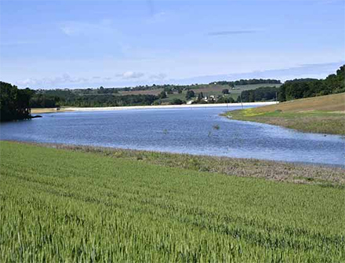

Lot-et-Garonne
Le lac de Caussade plein et prêt à l'emploi
Le lac n’est pas complètement rempli, « mais une chose est sûre, il ne l’a jamais été autant », affirme Patrick Franken. PHOTO THIERRY BRETON
Pinel-Hauterive - Fortement rempli par les dernières pluies, il pourrait servir pour la première fois dans le courant du mois de juin
Cette photo du lac de Caussade rempli, sous un beau soleil, pourrait faire office de faire-part de naissance. Que manque-t-il désormais à ce lac de la discorde, terrain de toutes les polémiques et batailles juridiques depuis environ deux ans, pour débuter enfin une existence sereine ? Six mois après l'achèvement de sa construction illégale, bien aidée par les dernières fortes pluies tombées sur le Villeneuvois (environ 60 ml sur les trois derniers jours), la fameuse retenue d'eau semble opérationnelle.
"Nous sommes enchantés, je ne vais pas vous dire le contraire, déclare Patrick Franken, l'un des leaders de la Coordination Rurale 47 et élu à la Chambre d'agriculture du Lot-et-Garonne. Je vis à 500 mètres et rares sont les jours où je ne vais pas le voir. En quelque sorte, c'est le bébé des agriculteurs locaux. Et le bébé s'est bien rempli..."